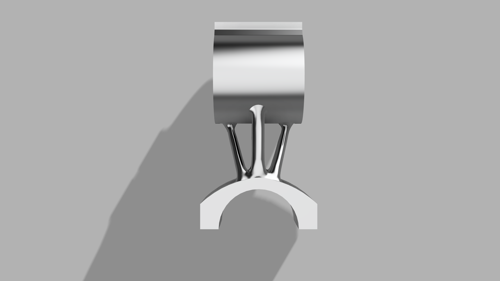

Proyecto destacado
Potencia de bicicleta en Zamak 3: del análisis ergonómico a la fundición y al diseño generativo


Objetivo y contexto
Diseñamos una potencia de bicicleta fundida en Zamak 3 y verificamos su capacidad mecánica. Primero definimos la geometría mediante un estudio ergonómico y después diseñamos el sistema de colada.
Análisis ergonómico
El trabajo se basó en la medición de ángulos corporales con RULER y en la definición de una geometría compatible con la postura del ciclista.
Estimación de la carga

Verificación por elementos finitos


Diseño del sistema de colada

Diseño generativo


Herramientas
Autodesk Inventor · Autodesk Fusion 360 · MATLAB · RULER · Análisis de fatiga · Método de módulos de Chvorinov